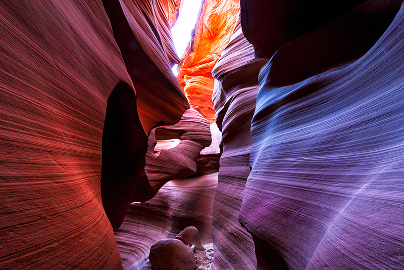
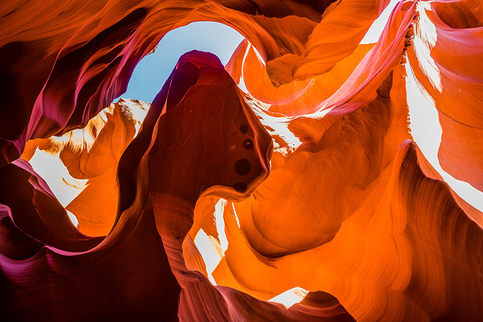

Antelope Canyon Wonderland
— Created by water running through rocks

The slot canyons referred to as Upper and Lower Antelope are a truly unique and one of a kind destination. These canyons are naturally formed marvels consisting entirely of Navajo sandstone and formed mostly from flash flooding and erosion.
Not sure what the difference is, or whether it's worth visiting both canyons? Although the two have a lot of similarities they also have some distinct differences. Tours can become quite crowded; especially in the more popular upper canyon, famous for the strong beams of light the sun produces mid-day. Both slot canyons offer visitors spectacular vibrant colors when the sun shines overhead; producing deep contrasting textures and layers of sandstone. Upper Antelope is flat, and walked right into from the makeshift parking lot outside of it while Lower Antelope requires descending several sets of metal stairways to enter, with short ladders and stairways to exit.
I visited the upper canyon and although I was awestruck by its beauty. I couldn't help but be distracted by the overcrowded and rushed tours. Hoping to find a more leisurely and relaxed setting I ventured back to take the 2 hour photography tour of Lower Antelope. With just 3 others in the group exploring the half mile length of the canyon was a much more pleasant experience for me.
Most photographers enter Upper Antelope with the single-minded goal of photographing a floor-to-ceiling light beam. For many the Antelope Canyon Holy Grail is the light shaft in the main room just inside the entrance. Like Horsetail Fall in February, Mesa Arch at sunrise, and the salmon-snacking grizzly at Katmai, it's a true bucket-list shot. The fact that the world doesn't really need any more versions of this particular image doesn't seem to be a deterrent.
But there are other less known light shafts, some that reach all the way to the dusty floor, others that land on the hard sandstone walls. And I'd argue that the best opportunity to find something unique in this heavily photographed location is to forego the beams and concentrate on the play of reflected light illuminating the canyon's graceful curves, lines, and shapes. If it's your first visit to Upper Antelope Canyon, by all means start with the cliché shot (I did), but challenge yourself to find something that's uniquely yours.